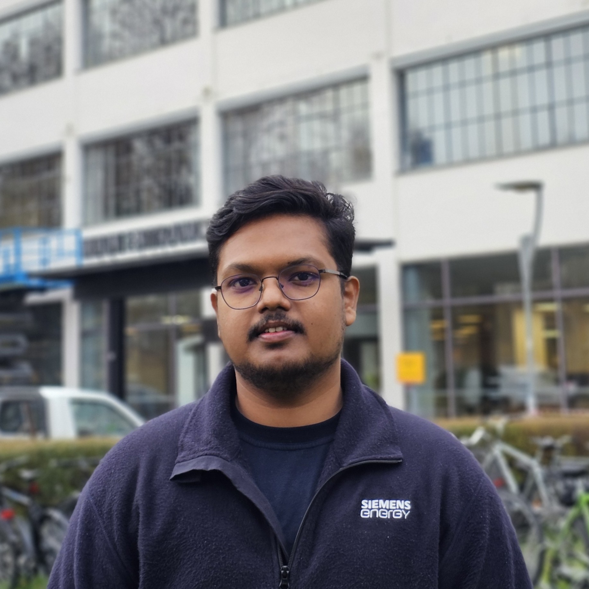
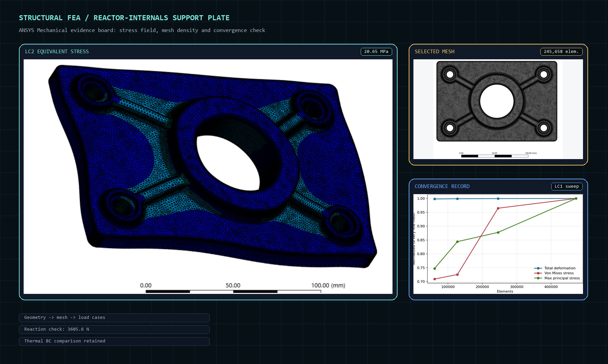
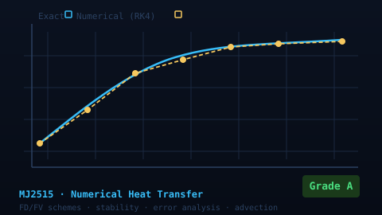
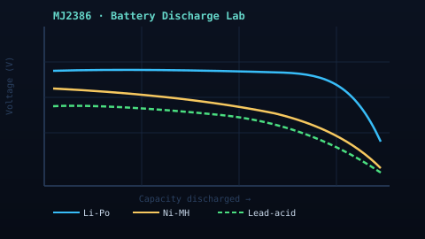
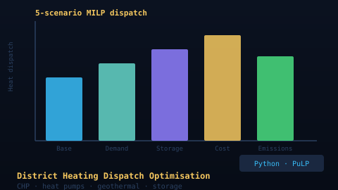
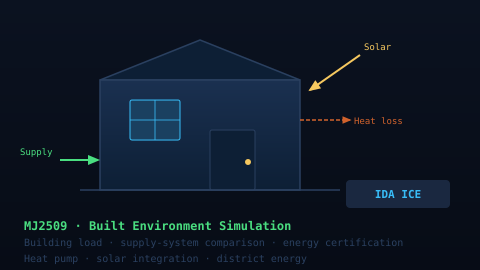

Hello — welcome
I'm Abhijith.M.Sc. Sustainable Energy Engineering · KTH 2026
I work on heat, flow and energy systems — turning high-temperature and energy problems into evidence you can build on.
I combine simulation, test context and energy-system modelling so technical questions can move from first-principles reasoning to decisions.
M.Sc. Sustainable Energy Engineering, KTH · currently exploring PhD and industrial R&D roles across Sweden and the EU.
EXPORTED CFD RESULTS
PRO2 INPUT PLAYBACK
SCENARIO ENERGY BALANCE
EQUATION-INFORMED RESEARCH SCENE
LIVE LENS
TRITA-ITM-EX 2026:14
Thermal lens: CHT, pressure loss, near-wall treatment and instrumentation.
Energy lens: building, dispatch, scenario and techno-economic modelling.
Decarbonisation lens: KPI/EnPI logic, metering readiness and industrial utilities.
Research lens: thermal resistance, surface condition and validation logic.
Validation signal
Live
0.003Biot number
0.990Mach · throat
Thesis sequence
From reducer geometry to validated thermal-fluid evidence.
The scroll sequence condenses the Siemens thesis logic: geometry, mesh, compressible flow, wall temperature and the KPI evidence that makes the case study defensible.
Skip to evidence mapEvidence map
Thermal-fluid evidence first, then instrumentation and methods. Energy systems evidence grounded in real modelling tools. Industrial decarbonisation evidence as method development. Research identity first, then supporting methods.
The Siemens Energy CFD/CHT thesis is the anchor. The supporting routes show compressible-flow modelling, conjugate heat transfer, mesh discipline, measurement-chain commissioning and physical interpretation under high-temperature constraints.
The modelling track collects the work most relevant to heat-and-power systems: IDA ICE, HOMER Pro, SAM, LEAP, Python/PuLP dispatch optimisation, forecasting and distribution-grid analysis.
The decarbonisation track focuses on transferable R&D behaviour: quantitative method design, validation against noisy real systems, optimisation logic and reproducible engineering tools for industrial energy decisions.
The Siemens Energy thesis is the research anchor. The supporting routes show research identity, experimental discipline and the way modelling assumptions were turned into physical interpretation under high-temperature constraints.
Primary
Siemens Energy CFD/CHT thesis
Fluent, CHT, mesh independence, NI-DAQ, LabVIEW, scope revision
Methods
Numerical heat transfer
Finite-difference error behaviour, stability and heat-transfer modelling groundwork
Identity
Research statement
Thermal resistance, degradation mechanisms and experimental-numerical validation
Optimisation
District heating dispatch MILP
Multi-objective dispatch across CHP, heat pumps, geothermal and storage
Fit
Industrial R&D statement
Industrial decarbonization, electrification and method development framing
Context
Fluid Dynamic Lab, Finspång
Simulation-to-test workflow, instrumentation and high-temperature validation context
Buildings
IDA ICE energy simulation
Building load behaviour, supply-system comparison and energy-performance interpretation
Method
Alleima energy performance mapping
Load-driver regression, metering gaps and deviation detection from operational data
Methods
Numerical heat transfer
Discretisation behaviour, numerical error and heat-transfer modelling groundwork
Output
Academic CV track
Research interests, thesis evidence, coursework and references
Output
Energy / R&D CV track
Energy/process modelling, optimisation, technical reporting and reproducible tooling
Open to
Four focused tracks across Heat and Power Technology.
Thermal and fluid engineering
CFD/CHT and high-temperature test-rig evidence from the Siemens thesis: k-omega SST, mesh independence, Biot interpretation, pressure-loss physics and NI-DAQ/LabVIEW commissioning.
Energy systems modelling
Heat-and-power modelling across IDA ICE, HOMER Pro, SAM, LEAP, Python/PuLP MILP optimisation, forecasting and distribution-grid studies.
Industrial energy and decarbonisation
Method-development evidence for industrial decarbonisation: energy performance mapping, load-driver regression, metering gaps, electrification-relevant utilities and reproducible decision-support tools.
Research
Research-facing layer around TRITA-ITM-EX 2026:14, high-temperature CHT, thermal resistance, surface-condition effects and experimental-numerical validation.
Featured evidence stack
Featured projects
Short previews of the strongest evidence. Open a case study for methods, data, limitations and decision logic.
Featured — Thermal / CFD / Test & Validation
ANSYS FluentCFD/CHTGas TurbinesNI-DAQLabVIEWSiemens NX
Siemens Energy CFD/CHT Thesis - Gas Turbine Reducer Thermo-Fluid Analysis
Seven months embedded at Siemens Energy Finspång conducting compressible CFD and conjugate heat transfer analysis of the Pulsatorn reducer, comparing the legacy two-step fitting against a 150 mm quintic C² redesign.
- Built steady-state compressible CFD and CHT models in ANSYS Fluent (k-omega SST) for inlet T = 673 K and P_gauge = 100,000 Pa.
- Conducted a three-level mesh independence study with 8/8 validation checks passing before the full simulation campaign.
- Applied Biot number analysis (Bi = 0.003-0.004) and identified near-choked versus supersonic vena contracta behaviour across geometries.
Featured — Structural Simulation / FEA

ANSYS MechanicalSpaceClaimReaction checksMesh convergence3-2-1 LC4RPython reports
Structural FEA Reactor Internals Pilot Study
Westinghouse-role-fit ANSYS Mechanical pilot study for a simplified reactor-internals support plate: structural screening, mesh convergence, reaction checks, LC4R support mapping and boundary-condition judgement.
- Fine mesh selected for reporting: 245,658 elements and 416,866 nodes.
- LC2 peak von Mises: 20.65 MPa under 5 kN lateral load.
- LC3 reaction check: 3605.6 N in ANSYS versus 3605.5 N applied resultant.
- LC4R relaxed thermal case documents the final RD1/RD2/RD3 support mapping and clean-solve acceptance gate.
- Standards gap stated honestly: not ASME BPVC, Eurocode or EN13001 certified.
Featured — Industrial Decarbonization / Electrification R&D

ISO 50001EU EED / EKLEnPIAudit methodology
Alleima — Energy Performance Mapping & Audit Methodology
Independently developed an industrial energy performance mapping methodology for Alleima AB. Work was desk-based and self-directed: regulatory comparison across seven jurisdictions, KPI/EnPI design, load-driver logic, metering readiness assessment, measurement planning and improvement-roadmap structure for electricity, compressed air, heating and process-utility systems.
- Independently developed tiered audit methodology aligned with Sweden’s EKL, EU EED and ISO 50001 frameworks.
- Comparative regulatory analysis for Sweden, Germany, Netherlands, Czechia, India, China and the United States.
- KPI/EnPI logic, load-driver identification, metering gap analysis, deviation detection and measurement planning.

Power flowN-1EV/PV/storage
Distribution Grid & Renewable Integration — KTH
CIGRE MV network-style power-flow, N-1 and 24-hour simulation study with EV charging, PV and storage impacts.
- Screened line loading, voltage behaviour and contingency sensitivity.
- Compared EV, PV and storage assumptions across time-varying demand.

PuLPPythonMILPDistrict heatingStorage
District Heating Dispatch Optimisation — KTH
Five-step LP/MILP dispatch model for Stockholm-style district heating: base case, future demand, storage integration, cost minimisation and emissions minimisation scenarios.
- Built a stepwise dispatch model isolating the effect of each design choice across five scenarios.
- Used Python and PuLP to compare heat allocation under resource, demand and emission constraints.

ForecastingPythonML
Heating Demand Forecasting
Day-ahead building heating-demand forecasting using weather and temporal features, baseline models and neural networks.
- Built weather and calendar feature sets for day-ahead prediction.
- Compared baseline and neural-network approaches with documented assumptions.

HydrogenPyomoDispatch
PyNEXUS Green Hydrogen Network Model
Coupled offshore wind, PEM electrolyzer and hydrogen-pipeline model with MILP dispatch optimisation.
- Models wind-to-hydrogen conversion, pipeline delivery and curtailment KPIs.
- Compares cost and emissions objectives with HiGHS/Pyomo optimisation.

EU ETSStreamlitExcel
EU ETS Exposure Calculator
Excel and Streamlit toolkit for estimating Scope 1 emissions, EUA cost exposure and carbon-intensity trends.
- Calculates ETS scenario summaries and EUA price sensitivity.
- Includes workbook parsing, CLI runner, PDF export and regression tests.

Energy KPIsISO 50001Reporting
Industrial Energy KPI Toolkit
Python, Excel and Streamlit toolkit for industrial EnPIs, baseline normalisation, anomaly flags and management reporting.
- Generates KPI results, actions logs, plots and one-page PDF reports.
- Includes guided Streamlit flow, diagnostics and CI quality checks.

VibrationFFT/PSDPython
Rotating Machinery Vibration Mini-Lab
Low-cost vibration workflow using phone accelerometer data, filtering, FFT/PSD, spectrograms and report generation.
- Compares operating points through frequency fingerprints and RMS metrics.
- Packages outputs as HTML reports, plots and summary CSVs.

SolidWorksMechanical designDrivetrainTechnical documentation
Mechanical Design & SAE Mobility Projects
Bachelor-level mechanical design work involving SolidWorks, drivetrain concepts, component selection and engineering documentation through SAE Bicycle Design Competition, BAJA and Tractor Design Competition activities.
- Created and supported CAD-based mechanical design work using SolidWorks.
- Contributed to drivetrain, transmission and component selection discussions.
- Helped prepare technical/design documentation for competition submissions.
- Built practical understanding of manufacturability, assembly thinking, mechanical constraints and team-based engineering delivery.
Navigation matrix Show full case-study list per track Expanded pathway view — strongest supporting case studies grouped per portfolio track.
Coursework evidence
Selected assignments with engineering outputs.
Selected KTH assignments are presented as portfolio evidence: the models, lab campaigns, reports and engineering methods behind the larger case studies.

MJ2515 / Grade A Numerical Heat Transfer Finite difference grids, Euler vs RK4, Lax-Friedrichs vs Lax-Wendroff and error behaviour.
MJ2386 / Lab data Battery Cell Discharge Testing Ni-MH, Li-Po and lead-acid discharge curves, C-rate behaviour and Peukert-style interpretation.
Optimisation / PuLP District Heating Dispatch Five scenario model covering base dispatch, storage, outages, cost and emissions objectives.
IDA ICE / Buildings Built Environment Energy Simulation Supply-system comparison, building load behaviour and energy-performance interpretation.Technical range Show methods and tools per track Detailed methods and tools used in each portfolio track.
Thermal-fluid engineering & test validation
Siemens Energy Fluid Dynamic Lab: steady-state compressible CFD and conjugate heat transfer in ANSYS Fluent (k-omega SST), three-level mesh independence, Biot number analysis, NI-DAQ/LabVIEW measurement-chain commissioning, K-type thermocouples, static and dynamic pressure sensors, validation planning and heater RCA.
Energy systems modelling
IDA ICE building simulation, HOMER Pro island energy modelling, SAM residential heating techno-economics, LEAP 3E scenario analysis, Python/PuLP district heating dispatch optimisation, scikit-learn heating demand forecasting and distribution-grid N-1 / EV / PV / storage studies.
Industrial energy & decarbonisation
Alleima ISO 50001/EED energy performance mapping, load-driver regression, metering-readiness assessment, KPI/EnPI logic, electrical utilities and compressed-air systems, EU ETS exposure modelling and reproducible engineering tools for decision-support contexts.
Research formation
Research statement, TRITA-ITM-EX 2026:14 thesis evidence, MJ2515 numerical heat transfer, MJ2510 research methods and a focused interest in high-temperature conjugate heat transfer, thermal resistance, surface condition and experimental-numerical validation.
Capabilities
Tools and methods behind the work
Thermal & testing
ANSYS FluentCompressible CFDConjugate heat transferk-omega SSTMesh independenceBiot analysisThermal boundary conditionsANSYS MeshingNI-DAQLabVIEWThermocouplesRoot cause analysisBattery discharge characterisationPeukert analysisC-rate testingSolar thermal collector sizingPCM / TES systems
CAD and PLM
Siemens NXTeamcenter PLM2020SolidWorksANSYS MechanicalANSYS SpaceClaim
Energy & power systems
IDA ICEHOMER ProSAMLEAPPuLPMILP dispatchPower-flow studiesN-1 screeningDistrict heating dispatchBuilding energy simulationPolygeneration3E scenario analysisTechno-economic assessmentSolar fraction analysis
Optimisation & data
PythonpandasNumPySciPyscikit-learnMATLABTime-series analysisScenario modellingKPI reportingStreamlitPlotlyModel evaluationDay-ahead forecastingFeature engineering
Machine learning
Neural networks (SNN / DNN)Logistic regressionMahalanobis outlier detectionHyperparameter searchBackpropagation / gradient descentModel comparison & validationTensorFlowPyTorch
Energy modelling tools
IDA ICEHOMER ProSAMMILP optimisation
Selected tools
Software workflow
GitDockerREST APIsPostmanEndpoint testsStructured debuggingDocumentationDashboards
Certifications
Applied CFD (Siemens)SSG Entre SafetyIBM Python DSDigital ManufacturingSchneider ElectricDigital Signal Processing
Research interests
Thermal-fluid problems where experiment, simulation and measurement converge.
The Siemens Energy thesis established a working method: build a defensible numerical model, validate the assumptions that can be tested, and state the implications for engineering decisions. The natural research extensions from that foundation are below.
Conjugate heat transfer in high-temperature cooling passages
Steady-state CHT in the thesis demonstrated how geometry, insulation and external heat loss interact in a confined high-temperature flow problem. The next research layer is transient operation, pulsating flow and near-choked flow stability — all relevant to calibration rigs and propulsion hardware where boundary conditions are dynamic.
ANSYS Fluent CHTk-omega SSTBi decompositionTransient CHT
Deposit and surface-condition effects on heat transfer
The thesis treated wall surfaces as clean and fixed. Real high-temperature passages develop altered surface conditions over time, which changes thermal resistance and heat transfer predictions. Connecting deposit-formation mechanisms to measurable thermal indicators is a research direction the thesis methodology is well positioned to support.
Thermal resistanceSurface conditionHealth monitoringExperimental validation
Industrial electrification and energy process modelling
Process system engineering for low-carbon industrial transitions — combining energy modelling (Python, MATLAB), techno-economic analysis, dispatch optimisation and measurement-based performance indicators. Work covers electrochemical processes, thermal systems and energy conversion pathways.
Python / MATLABPyomo MILPTEAEnPI methodology
Measurement-chain design and experimental-numerical validation
Seven months commissioning NI-DAQ/LabVIEW measurement chains at up to 700°C, including independent test campaigns and formal root cause analysis of a heater failure. The interest is in closing the loop between simulation predictions and instrument-grade measurements for validation of thermal models.
NI-DAQ / LabVIEWThermocouple chainsRCA methodologyValidation planning
Education
Academic foundation
Formal training across sustainable energy systems, heat and power technology, optimisation, built-environment energy, storage and mechanical engineering.
Focus areas include thermodynamics, heat and mass transfer, thermal systems, energy systems modelling, practical optimisation, data-driven forecasting, power systems fundamentals and techno-economic analysis.
- Numerical Heat Transfer in Energy Technology (MJ2515) - grade A
- AI Applications in Sustainable Energy Engineering (MJ2507) - grade A
- Energy Storage Technology (MJ2386) - grade B
- Renewable Energy Technology (MJ2411) - grade B
- Energy Management (MJ2511) - ISO 50001, KPIs, measurement and verification
- Degree Project in Heat and Power Technology (MJ232X) - 30 credits
Coursework on circular economy concepts for energy storage systems, supporting battery, lifecycle and sustainability analysis work.
Mechanical engineering foundation in thermodynamics, fluid mechanics, heat transfer, CAD/CAE, manufacturing and machine design, with SAE Collegiate Club and NSS activities.
Background
Experience
Four workplaces behind the portfolio evidence. Select a location or role for the detailed record.
Embedded thesis work in the Fluid Dynamic Lab: compressible CFD/CHT of a high-temperature reducer, three-level mesh independence, Biot interpretation, and NI-DAQ/LabVIEW measurement-chain commissioning.
TRITA-ITM-EX 2026:14
Bi = 0.003-0.004
Ma 0.990 vs 1.006
RCA scope revision
Developed ISO 50001/EED-aligned energy performance mapping methods: KPI/EnPI design, load-driver logic, metering readiness and measurement planning.
Delivered TypeScript/NestJS API endpoints, reliability fixes and automated endpoint testing in production-oriented teams.
Reviewed reactor concepts and cost drivers for polymer-waste pyrolysis, supporting early-stage technical and economic feasibility work.
Recommendations
Academic recommendation summaries
Principal's recommendation: undergraduate performance paired with responsibility beyond coursework, including technical-event organising, SAEINDIA participation and NSS flood/Covid relief initiatives.
Department recommendation: mechanical-engineering project ownership and collaboration, highlighting SAEINDIA work, collegiate responsibilities and the final-year robotic control-system and subsystem-integration project.
Faculty recommendation: hands-on engineering initiative across national SAEINDIA competitions, workshops and industrial visits, including the automated sanitiser machine built for local relief camps.
Paraphrased summaries of signed academic recommendation letters; full letters available on request.
CV
Selected CVs by hiring track
The CVs are split by role so the first page foregrounds the evidence most relevant to each hiring context.
Energy Systems / R&D CV
For energy systems, industrial decarbonisation and R&D analyst roles. Covers energy performance mapping, dispatch optimisation, techno-economic analysis and reproducible Python tooling.
PhD Application / Research CV
Academic format for doctoral applications: research interests, education and grades, Siemens thesis research experience, KTH pyrolysis internship, methods coursework, technical skills and references.
Thermal / CFD / Test Engineering CV
For thermal-fluid modelling, CFD, instrumentation and validation campaigns. Anchored by the Siemens Energy Finspång thesis: ANSYS Fluent CHT, k-omega SST, NI-DAQ/LabVIEW, heater-failure RCA and measurement-chain validation at up to 700°C.
Contact
Currently targeting doctoral research in high-temperature thermal-fluid systems and industrial R&D roles in decarbonization and electrification in Sweden.
Book a 20-min call
Prefer a quick conversation? Pick a slot. Calendar link will appear once configured.
Open booking page